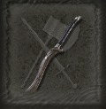
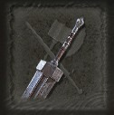
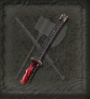
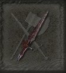
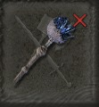
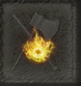
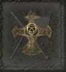

Bem-Vindo a Página de Builds
Aqui você vai encontrar recomendações de builds para cada tipo de atributo de dano do jogo, sendo eles:
-
Força
-
Destreza
-
Inteligência
-
Fé
-
Arcano
Builds de Força
Builds de Força são recomendadas para armas pesadas, como espadas retas e espadas colossais, sendo as principais recomendações:
 Presa Do Cão de Caça
 Espada do Guts
Builds de Destreza
Builds de Destreza são recomendadas para armas leves e/ou perfurantes, como Katanas e Lanças, sendo as principais recomendações:
 Katana Rios de Sangue
 Lança de VYKE
Builds de Inteligência
Builds de Inteligêna requerem um conhecimento mais amplo do jogo, pois são um mistura de feitiços, cajados e talismãs que vão realmente potencializar toda a build. as principais recomendações de cajados são:

Atiçador da Morte
 Cajado Pedrilhante de Lusat
Builds de Fé
Builds de Fé senguem a mesma lógica das builds de inteligência, porém aqui faremos uso de Selos e Encantamentos, sendo os melhores selos:
 Selo da Chama Frenética
 Selo da Térvore
Builds de Arcano
Builds de Arcano fazem uso tanto de armas, feitiços e encatamentos, sendo um equilibrio de todas as outras classes, porém aqui o conhecimento é mais específico, exigindo mais do jogador. Aqui recomendo que façam suas próprias pesquisas para a montagem da Build.
Página Home